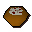
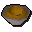
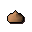
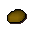
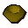

Unfinished bowl

| Config name | unfinished_veg_ball |
| Item id | 2193 |
| Weight | 300g |
| Members | Yes |
| Tradeable | Yes |
| Stackable | No |
| Options | Eat |
| Category | gnome_unf_odd_bowl |
| Defined in | scripts/skill_cooking/configs/gnome_cooking/gnomebowls.obj |
Unfinished bowl
This dish is just missing those little finishing touches.
How to make
| Skill | Level | XP | Ingredients | Tool | How | Where | Makes |
|---|---|---|---|---|---|---|---|
| Cooking | 1 |  Half baked bowl, Onion ×2, Potato ×2, | use on object | range | 1 can spoil into  Odd gnomebowl; members; add the ingredients to the half-baked dish, then cook it; gnome spice is not used up |
Used to make
| Skill | Level | XP | Ingredients | Tool | How | Where | Makes |
|---|---|---|---|---|---|---|---|
| Cooking | 1 | 30.0 | Unfinished bowl, Equa leaves | use on item | can spoil into Odd gnomebowl; members; the wrong topping spoils it |
Referenced in scripts
scripts/_test/scripts/cheats/cheat_bank.rs2scripts/skill_cooking/scripts/gnome_cooking/gnome_bowls.rs2scripts/skill_cooking/scripts/gnome_cooking/gnome_food_finish.rs2